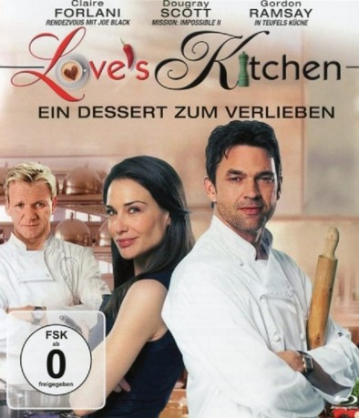

#8383 Love's Kitchen - Ein Dessert Zum Verlieben
Alternativ: Love's Kitchen
 
 IMDB-Wertung: 5.3 / 10
IMDB-Wertung: 5.3 / 10  Metascore: 0
Metascore: 0 
Chefkoch und Restaurantbetreiber Rob Haley ist vollkommen am Boden zerstört seit seine Frau bei einem tragischen Autounfall ums Leben geklommen ist. Sein Freund, der TV-Chefkoch Gordon Ramsay versucht ihn wieder aufzubauen. Er überredet Rob einen heruntergekommenen alten pub zu übernehmen und diesen in ein Gourmet-Restaurant zu verwandeln. Bald wird die amerikanische Gastro-Kritikerin Kate Templeton auf Robs Kochkünste aufmerksam. Doch Rob beschert ihr nicht nur kulinarische Genüsse...
Jahr: 2011
Dauer: 89 Minuten
FSK: 0
Land: England Studio: Intergroove MediaTonspuren: DTS - ,
Untertitel:
Auflösung: 1080p (1920x1080) Größe: 13209 MB
Genre: Drama, Komödie, Liebe
Regisseur: James Hacking
Drehbuch: James Hacking
Soundtrack: Gary Go, Tom Howe
Darsteller:
 Dougray Scott als Rob
Dougray Scott als Rob- Sarah Sharman als Waitress
- Katrine De Candole als Françoise
- Lee Boardman als Loz
 Michelle Ryan als Shauna
Michelle Ryan als Shauna- Holly Gibbs als Michelle
- Gordon Ramsay als Gordon Ramsay
 Simon Callow als Guy Witherspoon
Simon Callow als Guy Witherspoon- Seretta Wilson als Jill
 Claire Forlani als Kate Templeton
Claire Forlani als Kate Templeton Peter Bowles als Max Templeton
Peter Bowles als Max Templeton- Caroline Langrishe als Liz
- Pamela Binns als Little Old Lady
- Cherie Lunghi als Margaret
- Josh Bowman als Roberto
- George Camiller als Brian
- Simon Hepworth als James Forester
- Nikki Leigh Scott als Nicky
 Adam Fogerty als Terry
Adam Fogerty als Terry Pip Torrens als Health & Safety Official
Pip Torrens als Health & Safety Official- Richard Pepple als Policeman
- Michael Parle als Customers and Guests
 Lee Nicholas Harris als Restaurant Diner (uncredited)
Lee Nicholas Harris als Restaurant Diner (uncredited)- Dennis Santucci als Garden Party Guest (uncredited)
- Matthew Clancy als Ingo
- Rick Panesar als Kitchen Staff
- Suzi Salkeld als Kitchen Staff
- Tony Mann als Food Critic
- Philip Cross als Gordon Ramsay's PA
- Graham Howes als John
- Philip Dunbar als Alfie
- David Whitworth als Bertie
- Celia Henebury als Tanya
- Nicholas Keith als Derek
- Jon Foster als Producer - Director
- Didz Hammond als Himself
- Quentin Smith als Helicopter Pilot
- John Atterbury als Councilman 1
- Mark Penfold als Councilman 2
- Amber Aldridge als Customers and Guests
- Genevieve Allcroft als Customers and Guests
- Elizabeth Barnes als Customers and Guests
- Eleanor Butters als Customers and Guests
- Martin Calder als Customers and Guests
- Samantha Cheung als Customers and Guests
- Sophie Clarke als Customers and Guests
- Garry Dunks als Customers and Guests
- Hugh Elliot als Customers and Guests
- Nicholas Emson als Customers and Guests
- Liz Hart als Customers and Guests
Datei: X:\2011(G-M)\Love's Kitchen - Ein Dessert Zum Verlieben (2011, FSK0, 1920x1080).mkv seit 28.02.2018
Festplatte: HD 2011(G-Z)
 Es gibt insgesamt 100 Filme in der Gruppe '2011(G-M)'
Es gibt insgesamt 100 Filme in der Gruppe '2011(G-M)'